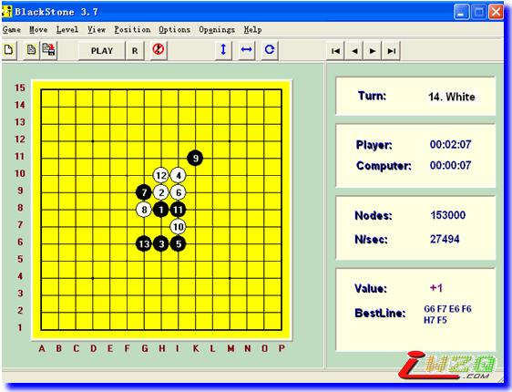
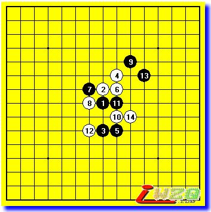
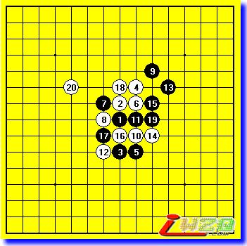
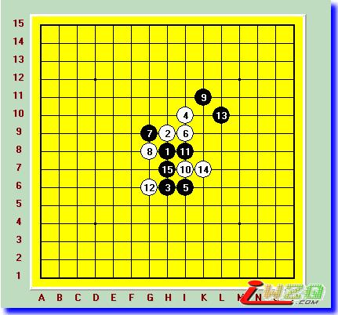

软件思维与人脑思维区别，谈如何人软结合
#1 软件思维与人脑思维区别，谈如何人软结合 作者：龙小小 发表时间：2010-5-28 23:07:22

这次采用的是3.7的版本，据某些网络棋手介绍，这个版本复算4次，而其他的黑石版本复算3次。也就是说这个版本的黑石BUG相对较少，而且由于其体积非常小，是连珠软件中最适合随身携带的版本。现在把几个主要软件参数给大家介绍下。在界面截图的右侧。Nodes后的数值代表者当前局面下软件思考的总步数。看着非常巨大恐怖，其实大部分都是在计算无用点。这也是黑石的弱点之一，而在人脑中某些局面是根本不需要计算，这样人脑可以计算的更有针对性。
N/sec是当前局面下软件每秒思考的步数。一般这个步数是和CPU的主频成比例的。比如本人现在使用的电脑是主频3G的CPU。那么运算速度一般是28000步/秒。如果这个数值突然放大很多，那么恭喜你，你的黑石已经崩溃了。引发这种情况的原因很多，比如当前局面下无效的冲四活三过多，或者双方牵制过多，或者软件运行时间过长都可以产生。当产生这样的情况时，考验你自身的棋力的时候就到了。有很多人认为内存对黑石的速度有很大的关系。其实这里告诉大家，关系非常小甚至没有。内存对黑石的影响主要在计算大量步数后的存储上。这点由于人软合一的纯在已经被忽略到很小的地步了。
Value是黑石最关键的参数。是黑石对局面的判断最直观的地方。当这个数值是+的时候就表示当前局面黑石计算的一方处于优势。数值是-的时候自然就是处于劣势了。当前测试版本的黑石需要在VIEW中把SHOW ANALYSIS选上这个数值才会显示出来。在目前的软件棋手中。对这个数值的使用方法常见有两种。一种是只看数值而不对局面自我进行分析。利用手的速度来不断更改选点，让软件计算数值。并且向后延伸，直到找到最佳选点。这样的软件操作手中拥有大量顶尖软件棋手，在他们眼中数值是最重要的。另外一种是加入自己的思考的。我本人也是第二种，当我使用黑石时也喜欢加入大量个人思考，软件对我来说只是辅助，作用是缩短思考时间。但是就算这样在软件比赛中我依然经常因为时间因素导致失败。这样就造成了我这种类型使用软件的有个最大的特点。要么走出非常精彩的取胜棋局。要么因为时间因素走出非常低级的错误。很难形容这两种软件棋手哪种更有优势。因为这里还涉及到开局研究方面的因素。
主要的参数就是以上几种。下面我们来看看同一局面下软件思维和人脑思维的区别在哪里。

瑞星开局白12传统的最强放点。14是常见应对。在这里如果让黑石计算15选点的话。黑石将轻易走出黑必败的局面。如下图：

15黑石会选择直接活三进攻。而白棋在16反击后利用18借出和左边的联系。之后白20简单白必胜。那么这个局面难道黑石强大的局部计算能力算不出白棋的VCT吗？这里就要说明下黑石第一个破绽，就是在进攻时候着重计算自身子力厚度大的地方。第二个破绽就是对计算直接VCT比较容易。而计算这种需要借用某些棋子（比如18）再连续做杀的棋。其计算能力就完全体现不出来了。毕竟软件的设计要更符合逻辑化，而这种左右借用全盘调动的情况在软件设计中很难体现出来。软件的设计更片中于单一局面下的算杀能力，和棋子厚度积累的能力。那么在14后人脑是怎么思维的呢。如下图：

看到这个参考图某些人要问了，定式中这里15一般是直接走在I12活三的，之后才会走在H7分断白棋。这里只是分析纯粹的人脑在当前局面会走在哪里，而不参考定式方面的影响，否则会造成判断的失误。纯粹的人脑在看到这个局面时候第一反应都是走在这个15点上。因为人脑会先分析自身是否可以取胜。很明显11-13的活二被白棋牵制住了。单纯依靠9-13的活二是不可能展开进攻的。那么H7的15既能继续在右边形成VCT。又可以分断白棋左右两边的连接。那么自然是人脑最佳的选择了。这里可以看出人脑在分析局面的时候更喜欢整体思考。而不是简单的在自身棋子厚度大的地方计算叠加效果。通俗点说人脑首先思考的是大局观，而软件首先思考的是局部优势。
#2 Re:软件思维与人脑思维区别，谈如何人软结合 作者：萧艺 发表时间：2010-5-29 3:40:10
好像还未完,期待更新.［ 龙小小 于 2010-5-29 23:04:42 时奖励此帖[金币加 20 威望加1］
#3 Re:软件思维与人脑思维区别，谈如何人软结合 作者：淡红的秋樱 发表时间：2010-5-29 14:47:10
继续挖坟。
#4 Re:软件思维与人脑思维区别，谈如何人软结合 作者：无志气广林 发表时间：2010-5-30 9:15:37
我觉得软件是可以用来学习和研究的工具，如果下棋时用我不太赞同。我觉得这样就成机器之战了，乐趣会少很多。人的盲点和计算深度不够才是人，要不都成机器人了，那下五子棋就没意思了。也许不久的将来软件就能终结五子棋了，那用软件就是必胜了。下棋时用它就更没乐趣可言了。#5 Re:软件思维与人脑思维区别，谈如何人软结合 作者：岑小鱼 发表时间：2010-5-30 15:39:02
人脑的思考不能简单的说会走哪里
不同的价值取向就会导致不同的选择
#6 Re:软件思维与人脑思维区别，谈如何人软结合 作者：心上人 发表时间：2010-5-31 13:05:57
软件可以来研究，真正做到人机结合似乎有点难#7 Re:软件思维与人脑思维区别，谈如何人软结合 作者：古灵精怪 发表时间：2010-6-2 21:42:37
 3.7
3.7